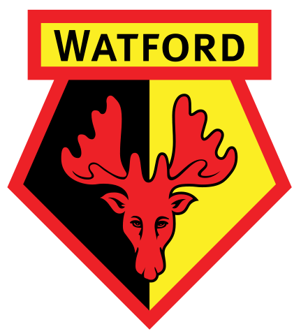
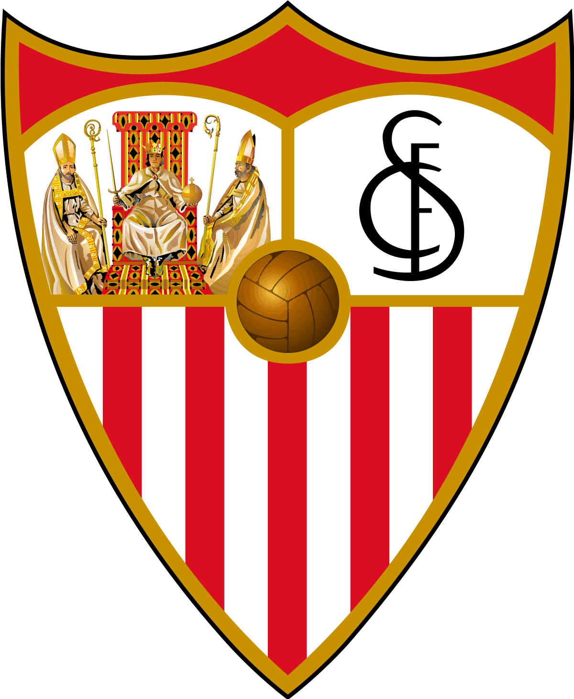
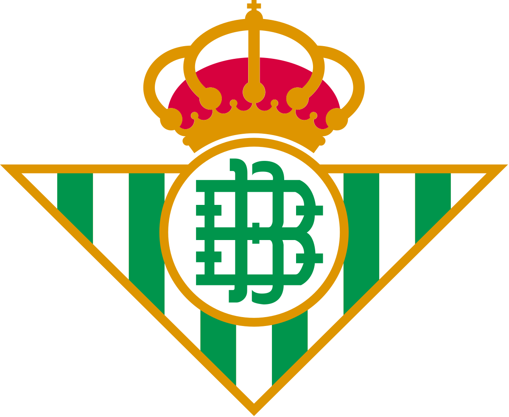
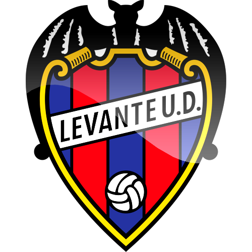
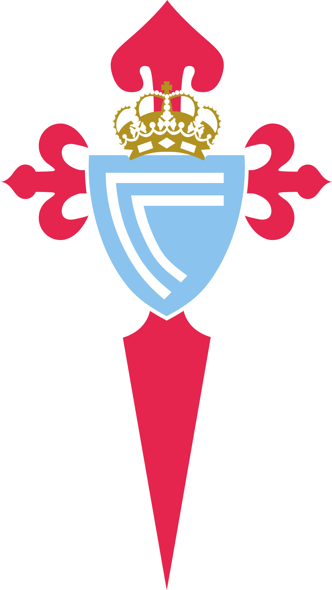

www.WorldSoccerRankings.com
| Position | Team | Played | Goal Difference | Points |
|---|
| 1st |  Liverpool Liverpool | 29 | +45 | 82 |
| 2nd |  Manchester City Manchester City | 28 | +37 | 57 |
| 3rd |  Leicester City Leicester City | 29 | +30 | 53 |
| 4th |  Chelsea Chelsea | 29 | +12 | 48 |
| 5th |  Manchester United Manchester United | 29 | +14 | 45 |
| 6th |  Wolverhapmton Wanderers Wolverhapmton Wanderers | 29 | +7 | 43 |
| 7th |  Shefffield United Shefffield United | 28 | +5 | 43 |
| 8th |  Tottneham Hotspur Tottneham Hotspur | 29 | +7 | 41 |
| 9th |  Arsenal Arsenal | 28 | +4 | 40 |
| 10th |  Burnley Burnley | 29 | -6 | 39 |
| 11th | Crystal Palace | 29 | -6 | 39 |
| 12th |  Everton Everton | 29 | -9 | 37 |
| 13th |  Southampton Southampton | 29 | -17 | 34 |
| 14th |  Newcastle United Newcastle United | 29 | -8 | 29 |
| 15th |  Brighton and Hove Albion Brighton and Hove Albion | 29 | -7 | 29 |
| 16th |  Westham United Westham United | 29 | -15 | 27 |
| 17th |  Watford | 29 | -17 | 27 |
| 18th |  Bournemouth Bournemouth | 29 | -18 | 27 |
| 19th |  Aston Villa Aston Villa | 28 | -22 | 25 |
| 20th |  Norwhich City Norwhich City | 29 | -27 | 21 |
| Position | Team | Played | Goal Difference | Points |
|---|
| 1st |  Barcelona Barcelona | 29 | +45 | 82 |
| 2nd |  Real Madrid Real Madrid | 28 | +37 | 57 |
| 3rd |  Sevilla | 29 | +30 | 53 |
| 4th |  Real Sociedad Real Sociedad | 29 | +12 | 48 |
| 5th | Getafé | 29 | +14 | 45 |
| 6th |  Athletico Madrid Athletico Madrid | 29 | +7 | 43 |
| 7th |  Valencia Valencia | 28 | +5 | 43 |
| 8th | Villareal | 29 | +7 | 41 |
| 9th | Granada | 28 | +4 | 40 |
| 10th |  Athletic Bilbao Athletic Bilbao | 29 | -6 | 39 |
| 11th |  Osasuna Osasuna | 29 | -6 | 39 |
| 12th |  Real Betis | 29 | -9 | 37 |
| 13th |  Levante | 29 | -17 | 34 |
| 14th |  Alavés Alavés | 29 | -8 | 29 |
| 15th |  Real Valladolid Real Valladolid | 29 | -7 | 29 |
| 16th | Eibar | 29 | -15 | 27 |
| 17th |  Celta Vigo | 29 | -17 | 27 |
| 18th | Mallorca | 29 | -18 | 27 |
| 19th | Leganés | 28 | -22 | 25 |
| 20th | Espanyol | 29 | -27 | 21 |